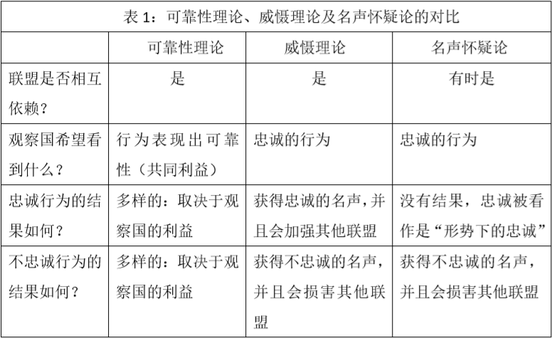

收录于合集 #理论研究 96个

作品简介
【作者】 Iain D. Henry，澳洲国立大学战略与国防研究中心讲师，研究领域国际安全战略。
【编译】 朱晓洁（国政学人编译员，中国政法大学）
【校对】 李源
【审核】 董骁天
【排版】 马璐
【美编 】黄竹音
【来源】 Henry, I.D. (2020) What Allies Want: Reconsidering Loyalty, Reliability and Alliance Interdependence， International Security , 44 （4）, 44-83
期刊简介
《国际安全》（International Security）是经过国际和国家安全领域同行评议的顶级学术期刊，其刊发的论文主题广泛，涵盖战争与和平等传统安全问题与环境、人口、人道主义、恐怖主义等时新的安全议题。它成立于1976年，由哈佛大学贝尔弗科学与国际事务中心（Belfer Center for Science and International Affairs at Harvard University）编辑，麻省理工学院出版社（MIT Press）出版，每年四期。根据Journal Citation Reports显示，其2019年影响力因子为5.432。
盟友想要什么：重新思考忠诚、可靠性和联盟相互依赖
What Allies Want: Reconsidering Loyalty, Reliability and Alliance Interdependence
Iain D. Henry
内容提要
本文首先检验了名声、忠诚以及联盟相互依赖的相关理论，批判了“国家希望其盟友保持始终如一的忠诚”的观点。作者认为威慑理论和名声怀疑论都是错误的，并发展了一套“联盟可靠性理论”：盟友想要的是可观察到的可靠性，而不是内在的忠诚。随后，作者提出了一套理论假设，并与威慑理论和名声怀疑论做了对比。最后，作者用第一次台海危机作为案例检验了其“联盟可靠性”理论。
文章导读
1.
名声、忠诚与联盟相互依赖
在已有的研究中，“忠诚”是经常被使用而却很少被定义的一个概念。作者借用了格伦·斯奈德（Glenn Snyder）的一些思想，将忠诚定义为（一国）完全履行由盟约规定的、在战时支持盟友的正式义务，以及完全履行由“盟友光环”带来的对盟友表示支持的非正式义务。一国可能在盟约明确规定的核心议题上是忠诚的，但在一些边缘议题上却是不忠诚的。因此，将具体的国家行为，而非国家本身，描述为忠诚或不忠诚是更为准确的。
威慑理论认为，在存在联盟间相互依赖的情况下，忠诚显得十分重要，一国对盟友的忠诚或不忠诚的行为都会影响到他国对本国未来行为的预期。名声怀疑论认为，当一国表示对盟友的忠诚时，并不会增加其名声，反而盟友会认为这是出于利益权衡的结果；但当一国表示出对盟友的不忠诚时，则会降低其名声。这两种理论都认为存在联盟相互依赖（Alliance Interdependence），国家通过观察到的行为来评估国家品格（Character）——忠诚或不忠诚，而不是去评估利益（Interests）和国家能力（Capabilities）。
2.
联盟可靠性理论
作者继承发展了米勒（Gregory Miller）的“可靠性”思想，将“可靠性”定义为国家之间对特定利益的相对价值和利益追求方式的一致程度，即国家之间存在共同利益的程度。
一个可靠的盟友不会（给其他国家）造成被抛弃（Abandoned）或被牵连（Entrapment）的危险。相反，不可靠的盟友往往因太胆小或太好斗而给其他国家带来上述危险。但这也并不意味着盟友会在每一个问题上都达成一致：在有共同利益的问题上，盟友可能是可靠的，但在有利益分歧的问题上又变得不可靠。作者的可靠性理论不仅适用于战时或有安全危机时，并且也适用于和平时期的案例。一国可以通过监测其盟友那些表现出趋同利益的行动，并观察其实现这些利益目标的能力，以此评估盟友的可靠性。
作者认为可靠性理论的解释力强于忠诚理论，主要有三个原因。
其一，可靠性理论认为国家不仅担心盟友的不忠诚（被抛弃），也害怕被拖入不必要的冲突中（太忠诚而被牵连）。而威慑理论和名声怀疑论认为忠诚总是盟友想要的，不忠诚是盟友不想要的。
其二，可靠性的概念认为：不同盟友对一国行为的感受可能不同，这更能解释现实情况。作者认为，国家观察其盟友的行为评估彼此间的共同利益和盟友实现这些利益的能力，而不是做出对国家品格的判断。所以，国家不会因为忠诚或不忠诚而获得名声。同时，不同的国家有不同的利益，对两个有共同盟友的国家来说，它们可能对该国家的可靠性持有完全相反的意见。可靠性是一个取决于本国利益和盟友行为的相对的概念。然而，威慑理论和名声怀疑论以忠诚评价国家的内在品格，这种品格被认为是具有连贯性的，盟友以前忠诚未来也会忠诚，以前不忠诚未来也会不忠诚；对一个盟友忠诚，对其他盟友也忠诚。这两个理论在解释现实中一国对一个盟友时而忠诚时而不忠诚、一国对某些盟友忠诚对某些盟友不忠诚的现象时，解释力较弱。
其三，可靠性理论拓展了联盟相互依赖的解释范围。乔纳森·默瑟（Jonathan Mercer）将“相互依赖”定义为“利用过去的行为来预测或解释未来的行为”，并且这种相互依赖在反复出现的危机中被检验。但作者认为，联盟相互依赖在没有争端的情况下也会发生作用，并且更多的是出于对利益而不是品格的评估。一国观察到其盟友表现出不可靠性，它应该尝试降低风险。如果该国害怕被抛弃，它可能会增加国防预算、寻找新的盟友、和平解决旧的问题或与盟友讨论这种恐惧。如果该国害怕被牵连，它可能会实施疏远政策、威胁撤销支持、发起和平倡议或废除联盟。如果该国在一个议题上没有实在的利益，并且盟友的行为不会影响该盟友的可靠性，那么该国也不会在意其盟友如何做。这种相互依赖的概念使得盟友行为的重要性不仅体现在未来，也体现在当下。因此，作者建议国家应当时刻对盟友的可靠性的变化保持敏感。
经过上述分析，作者将“可靠性”理论的分析框架精炼地表达如下：
假设1：一国会观察其盟友在其他联盟中的行为。如果这些行为表现出与本国利益不一致时，就会引起被抛弃或被牵连的恐惧，该国会将该盟友评估为不可靠的。
假设2：如一国将其盟友评估为不可靠的，它将会采取措施降低可能造成的具体风险。
将威慑理论、名声怀疑论以同样的方式表达出来，如下：
威慑理论：
假设1：想要看到盟友表示忠诚的国家会观察盟友在其他联盟中的行为。
假设2a：如果盟友表现出忠诚，观察国会预期盟友在未来表现出忠诚。
假设2b：如果盟友表现出不忠诚，观察国会预期盟友在未来表现出不忠诚。
名声怀疑论：
假设1：一个希望看到其盟友“行事恰当”并表示忠诚的国家，会观察盟友在其他联盟中的行为。
假设2a：如果盟友表现出忠诚，观察国并不会预期盟友在未来表现出忠诚。
假设2b：如果盟友表现出不忠诚，观察国会预期盟友在未来表现出不忠诚。

3.
检验理论：第一次台海危机
本文采用第一次台海危机中美国的五个盟友——英国、新西兰、日本、菲律宾和韩国——的反应来检测可靠性理论。在第一次台海危机中，五国的立场如下：
英国、新西兰：既担心危机升级，也不想置之不理，立场模糊。希望在观察到中美之间有更进一步的互动以及可行的停火协议出现时再做决定。希望美国也能保持一个模糊的态度，不坚决支持国民党政权，也不表示放任不管。
日本：不希望美国对国民党政权保持无条件的忠诚，害怕被牵连，极力避免冲突的升级。
菲律宾：希望美国对国民党政权保持忠诚的支持，并期望将冲突控制在地区范围之内，不希望发生全面战争。
韩国：希望美国对国民党政权保持忠诚的支持，并希望冲突升级，为韩国进攻朝鲜提供机会。
美国国内在台湾问题上的立场也是不同的，一方要求政府对国民党政权表示坚决的支持；另一方则要求政府谨慎考虑对国民党政权的支持，避免使得危机升级导致第三次世界大战。经过一系列的讨论，美国最终确立的立场是：不给予国民党政权正式的盟友地位，不表示坚决到底的支持，也不表示放任不管的态度，让中国保持猜测，同时寻求与中国的进一步接触。
在台湾问题上，美国及其盟友都有自己的利益考量，作者将可靠性理论、威慑理论以及名声怀疑论应用于美国与其盟友关系的分析，认为在第一次台海危机中，可靠性理论得到了支持。
4.
结论：理论意义及政策意义
本文通过进一步发展可靠性的思想，推进了关于联盟相互依赖的争论。威慑理论建议决策者维护名声，因为这样做可以加强联盟。像乔纳森·默瑟这样的名声怀疑论者建议美国不要担心盟友的观点，因为美国不能操纵自身在盟友眼中的形象。然而，这些理论并没有认识到联盟的相互依赖是由可靠性的信念支撑的。名声怀疑论者的论点是正确的，即天生忠诚的名声不值得威慑理论给予它的核心重要性，但这并不意味着联盟相互依赖的任何前景都应该被忽视。熟练的联盟经营要求决策者明白，美国的盟友不会作为一个统一的整体以同样的方式看待美国的行动。尽管威慑理论鼓励将美国盟友作为一个整体集团的概念，但艾森豪威尔总统意识到，一个单一集团的立场可能会严重损害或摧毁其他重要的联盟。为了以同样的机敏和智慧管理未来的危机，美国决策者将再次需要区分忠诚和可靠性。
译者评述
1. 作者批判了现有的以“忠诚”为理论基础的威慑理论和名声怀疑论，认为它们逻辑不通，解释力有限。同时，作者认为传统理论中的“联盟相互依赖”是存在的，只是作用机制是通过对“可靠性”的评价而不是对“忠诚”的评价来实现的。“盟友想要的是可观察到的可靠性”这一点是作者最主要的观点也是最突出的理论贡献，它重新将联盟关系的落脚点放在了国家利益和国家能力上，理论基础更加坚实，更加符合现实，具有较强的解释力。
2. 一般来说，一个理论越贴近现实，往往会引入更多的变量来解释复杂的现实，导致理论有失简洁。但作者的可靠性理论在更加贴近现实的同时，并没有造成理论的复杂化，依旧保持了简洁的风格。随着国家利益和国家能力的变化，盟友之间的互相评价也随之变化，这导致了简洁的理论在运用中依旧需要具体问题具体分析，评估盟友之间利益的一致程度和盟友实现这些利益的能力需要大量的官方及非官方的资料、数据加以支持。本文只是提供了一个理解联盟关系的可行的分析框架。
3. 对中国来说，作为一个不结盟的国家，没有盟友并不意味着联盟理论没有意义。与中国打交道的许多国家都是结盟国家，它们之间存在着复杂的联盟关系。当中国与这些国家产生冲突时，它们会寻求盟友的帮助来对抗中国，这时中国能否预测它盟友的态度对冲突的解决十分重要。作者的可靠性理论为中国分析预测冲突国盟友的态度提供了一个可行的、现实的框架。
文章观点不代表本平台观点，本平台评译分享的文章均出于专业学习之用, 不以任何盈利为目的，内容主要呈现对原文的介绍，原文内容请通过各高校购买的数据库自行下载
**
**
**
**
**
**
添加 “国小政”微信
获取最新资讯


国政学人
支持学术公益与知识传播
微信扫一扫赞赏作者 __赞赏
已喜欢，对作者说句悄悄话
取消 __
发送给作者
发送
最多40字，当前共字
上一页 1/3 下一页
长按二维码向我转账
支持学术公益与知识传播
受苹果公司新规定影响，微信 iOS 版的赞赏功能被关闭，可通过二维码转账支持公众号。